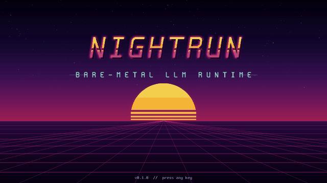
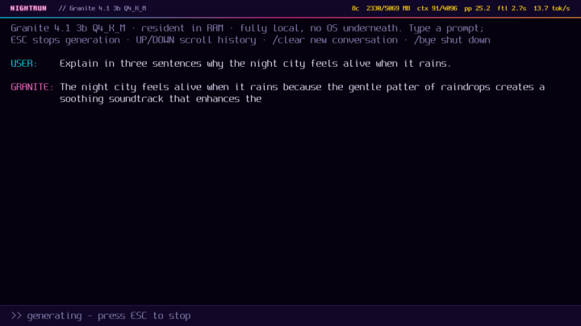

A Raspberry Pi boots straight into a chat prompt. There's no operating system underneath it.
Every on-device AI app we've written about here, including our own, still needs an operating system to run: a kernel, a scheduler, a filesystem, a network stack sitting between the model and the metal. A developer going by hardrave deleted that whole layer. NightRun is a single UEFI application — the first and only thing that runs after firmware handoff — that loads a quantized model straight into RAM and puts a chat interface directly on the screen's framebuffer. No Linux. No init system. Nothing between the model and the hardware but the code hardrave wrote.
Edge in the Wild is our occasional spotlight on real builders running AI on hardware they own. This one: NightRun, MIT-licensed, on GitHub at github.com/hardrave/NIGHTRUN, covered by CNX Software on July 30, 2026. Screenshots and demo footage below are the project's own, via its GitHub repo and CNX Software's coverage.

What "no operating system" actually means here
NightRun is a UEFI application, the same class of program as your motherboard's boot menu or a Windows installer's early loader — code the firmware runs directly, before anything resembling an OS exists. Written in Rust, it targets two real, different platforms: any 64-bit UEFI x86_64 machine (tested in QEMU/OVMF, Secure Boot disabled) and a genuine Raspberry Pi 5, validated on real D0-stepping 8GB boards, not just emulated. There's no process table, no memory protection between "the app" and "the system" because there is no system — NightRun's inference loop, its model weights, and its framebuffer output all share one flat address space it manages itself.
That's a real constraint, not a gimmick: normal LLM runtimes lean on an OS for memory-mapped file loading, thread scheduling across cores, and a display server to draw a UI. NightRun's README describes doing all of that itself — reading the model file directly off boot media into RAM, running inference synchronously, and drawing character glyphs directly into the UEFI graphics output protocol's frame buffer. Every layer a typical llama.cpp deployment gets from Linux for free, this project had to write by hand or do without.
What actually runs, and how fast
The README lists four supported quantized chat models, chosen specifically to fit inside boards with no swap, no page cache, and RAM measured in single-digit gigabytes:
| Model | Quant | Min RAM |
|---|---|---|
| Llama 3.2 1B | Q8_0 | 4 GB |
| Llama 3.2 3B | Q4_K_M | 6 GB |
| Granite 4.1 3B | Q4_K_M | 6 GB |
| Qwen3 4B | Q4_K_M | 8 GB |
Source: github.com/hardrave/NIGHTRUN README, cross-checked against CNX Software's coverage.
Per CNX Software's hands-on numbers: Llama 3.2 1B at Q8_0 decodes at roughly 20 tokens/second under QEMU on x86_64 — a virtualized environment, so treat that one as a ballpark, not a hardware-floor number. The real-hardware figure is the one that matters more for an edge-AI audience: Granite 4.1 3B at Q4_K_M generates about 3.0 tokens/second on an actual Raspberry Pi 5, direct from firmware, with nothing else running on the board at all — not a background service, not a compositor, not a single other process competing for the same four Cortex-A76 cores.

The detail that made us look twice
CNX Software's writeup includes a line worth sitting with: "the majority of the code for the NightRun project was written using Claude Code with the Fable 5 model." A project whose entire point is removing every layer of software between a model and the hardware it runs on was itself substantially written by a different AI model. That's not a contradiction — an LLM writing Rust that boots bare metal and an LLM answering chat prompts on that same bare metal are different jobs — but it's a genuinely of-the-moment detail for a piece about on-device AI, and honest enough that neither the builder nor CNX Software buried it.
Why this is the extreme end of the same bet
privateSLM still needs iOS or macOS underneath it — Apple's Foundation Models framework and our llama.cpp fallback both assume a real operating system, a real process, real memory protection. NightRun is what "the model comes to your data" looks like with every layer between the two removed on principle: no OS to patch, no background telemetry process that could phone home even by accident, no scheduler deciding your inference thread waits its turn. You lose a lot doing that — no filesystem beyond what's needed to read one model file, no networking stack at all, one model loaded at a time with no way to switch without rebooting. But it's proof that "on-device" has a floor most of us never go anywhere near, and that floor runs a real 3B model, on real Raspberry Pi hardware, at a real, if modest, 3 tokens a second.
Source / credit: NightRun is the independent work of GitHub user hardrave, MIT-licensed, at github.com/hardrave/NIGHTRUN. Technical details and benchmark figures cross-checked against CNX Software's July 30, 2026 coverage. Screenshots and demo GIF are the project's own.
Discuss this on the forum → — ever stripped a project down past the point where "obviously" you need an OS? We'd like to hear about it.